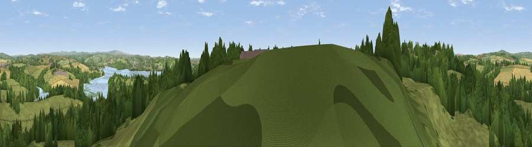

Viewpoint near Botus Fleming
#13316 in England · top 24% of its area beats it · near Botus Fleming · access?Where it is
The exact computed spot (SX 41525 60475). Click the marker for map links.
Public access: no public right of way or access land is recorded at this exact spot — it may be on private land. Computed from Natural England's CRoW access layer and OpenStreetMap rights of way — not the legal definitive map. Always verify locally.
The view, rendered

A 360° render of this exact spot computed from the terrain model, tree cover and land cover — summer colours, afternoon light, calibrated against photographs of famous viewpoints. Real trees, hedges and buildings will differ in detail.
The panorama
Grey silhouette: terrain skyline in each direction (720 bearings, Earth curvature and refraction included). Dashed green: skyline with trees (+15 m) and buildings (+8 m) as obstacles. Blue strip: how far the ground is visible on each bearing.
Where the view opens
Wedge length = distance to the farthest visible ground on that bearing (vegetation-aware). Rings at 10, 25 and 50 km.
What fills the view
42% grassland · 36% woodland · 8% built-up · 8% cropland · 5% water ·
Angular shares of the visible panorama (visual magnitude), not map area. Landscape diversity 0.57 (0–1 Shannon).
Key numbers
More beautiful places nearby
The staircase of upgrades: each row has a higher view potential than everything closer. Driving times are estimates from straight-line distance, calibrated against real road routing — check an actual route before setting out.
| Place | Direction | Drive | Score |
|---|---|---|---|
| Cumble Tor | WSW · 3 km | ~7 min | 64.5 |
| Viewpoint near St Mellion | NNW · 4 km | ~10 min | 67.3 |
| Viewpoint near Landrake | WSW · 5 km | ~10 min | 69.4 |
| Viewpoint near Freathy | SSW · 8 km | ~16 min | 76.7 |
| Viewpoint near Crafthole | SW · 9 km | ~18 min | 80.5 |
| Viewpoint near Crafthole | SW · 9 km | ~18 min | 81.0 |
| Viewpoint near Downderry | SW · 10 km | ~20 min | 83.5 |
| Viewpoint near Polperro | WSW · 24 km | ~40 min | 83.7 |
50.42270, -4.23228 · source: screening · position refined by local search. Computed location — check access rights before visiting.